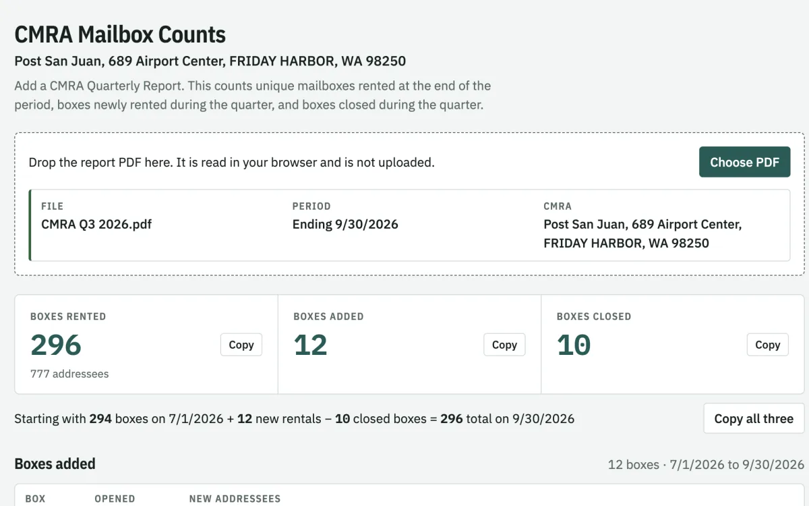
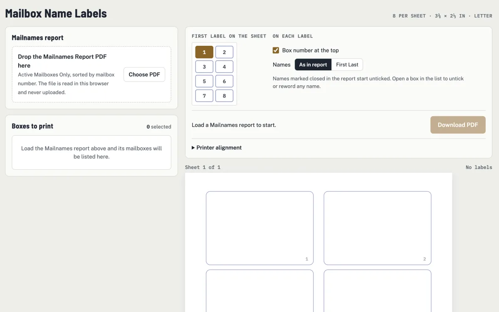
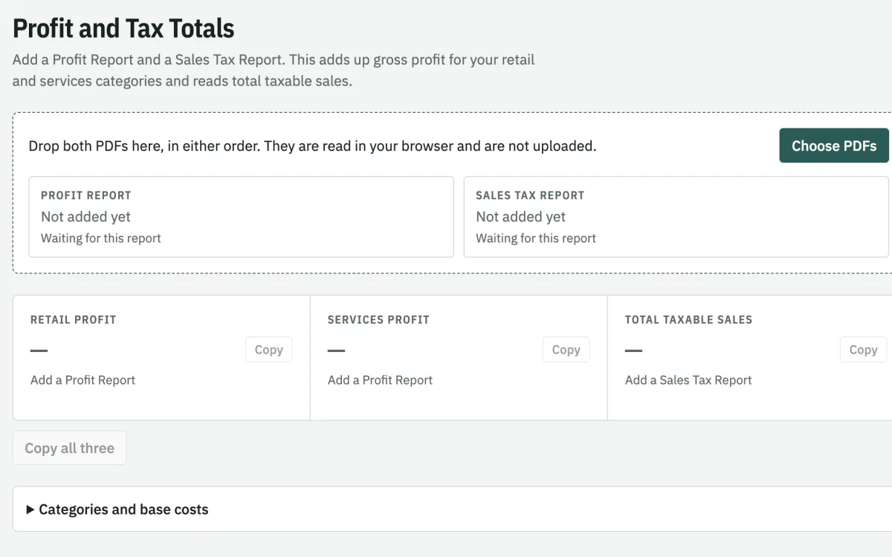

Post San Juan Tools
Back-office helpers for the store. Each one reads its report PDFs right in your browser — nothing is uploaded.
-

CMRA Mailbox Counts
Drop in a CMRA Quarterly Report to count boxes rented at period end, newly rented, and closed during the quarter.
-

Mailbox Name Labels
Turn a Mailnames Report into a printable PDF of box name labels, 8 per Letter sheet.
-

Profit and Tax Totals
Add a Profit Report and a Sales Tax Report to total retail and services gross profit and taxable sales.